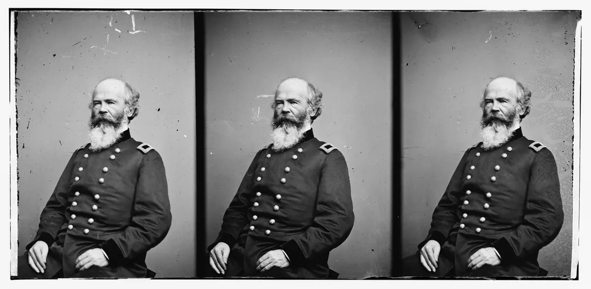

OKpolítico
OKpolítico1814: El regreso del monarca y la ley insurgente (May-Ago)

Explora el periodo de mayo a agosto de 1814 en la serie 'Historia política de México, año por año'. Analizamos el impacto del regreso de Fernando VII y la abolición de la Constitución de Cádiz, la férrea respuesta del virrey Calleja y el avance del Congreso insurgente en la redacción de la Constituc
Compartir por WhatsApp▶ Ver este video en YouTube y suscríbete
1. El verano de la restauración europea y sus ecos en América
Entre mayo y agosto de 1814, el escenario geopolítico europeo experimentó una transformación radical y sin precedentes tras la derrota definitiva de Napoleón Bonaparte y su consiguiente exilio en la isla de Elba.
Las potencias vencedoras del continente firmaron el trascendental Tratado de París el 30 de mayo, devolviendo formalmente a Francia a sus fronteras originales de 1792 y permitiendo el retorno formal de la histórica Casa de Borbón al trono francés bajo la figura de Luis XVIII.
✉️ Recibe lo importante del día en tu correo. Suscríbete gratis →Este complejo reordenamiento continental no solo redefinió profundamente las fronteras y los equilibrios de poder del viejo continente, sino que liberó de manera inmediata ingentes recursos militares y diplomáticos que las potencias imperiales europeas, y de manera muy especial la monarquía española,
redirigirían sin pérdida de tiempo hacia sus dominios ultramarinos con el propósito explícito de sofocar los conatos independentistas y las insurrecciones que amenazaban con desgarrar sus posesiones coloniales en el continente americano. En el corazón palpitante de este reordenamiento monárquico internacional, la corona española recuperaba finalmente a su soberano titular, Fernando VII,
quien había permanecido largo tiempo confinado y liberado tras las complejas y delicadas negociaciones diplomáticas del Tratado de Valençay. Aunque el rey cruzó la frontera hispana a principios de la primavera,
fue concretamente en mayo de 1814 cuando su acción política dio un giro drástico y autoritario que sacudiría profundamente los cimientos de todo el imperio ultramarino. La extendida expectativa y la ilusión de que el monarca aceptara de buen grado un marco constitucional moderado y representativo se desvanecieron con rapidez ante la intensa presión ejercida por los sectores más conservadores de la nobleza tradicional y el alto clero peninsular,
que exigían la vuelta al orden absolutista. El 4 de mayo de 1814, respaldado firmemente por el célebre Manifiesto de los Persas y por las facciones políticas más reaccionarias,
Fernando VII firmó en la ciudad de Valencia el real decreto que anulaba de forma categórica y por completo la Constitución de Cádiz de 1812. Para la historiografía especializada,
este decreto representó la ruptura definitiva con el experimento liberal español y el inicio de una cerrazón política absoluta que cerraba de golpe cualquier salida pactada o negociada a los complejos conflictos americanos, obligando tanto a los criollos reformistas como a los caudillos armados en los virreinatos a replantearse de raíz sus estrategias políticas frente a una corona resuelta a restaurar el Antiguo Régimen sin ningún tipo de concesión.
A su posterior entrada triunfal en Madrid el 13 de mayo, el monarca ordenó la disolución formal de las Cortes y desató una persecución sistemática y despiadada contra los liberales peninsulares que habían defendido el parlamentarismo y la soberanía nacional durante la dura ocupación francesa.
Las repercusiones directas de esta radical restauración absolutista no tardaron en cruzar el océano Atlántico, impactando de lleno en la administración fiscal, el comercio ultramarino y la estructura militar del virreinato novohispano,
donde las autoridades locales y los mandos fieles a la corona vieron luz verde para endurecer drásticamente su represión contra cualquier disidencia.
2. El virreinato bajo el puño de hierro de Félix María Calleja
En el vasto territorio de la Nueva España, el virrey Félix María Calleja gobernaba con mano de hierro, aplicando una estricta y metódica estrategia contrainsurgente que combinaba de manera implacable la persecución militar en los campos de batalla con la asfixia económica sistemática de las poblaciones y regiones que apoyaban a los rebeldes.
Las noticias oficiales sobre el regreso de Fernando VII al trono y la consiguiente anulación de la Constitución de Cádiz llegaron al virreinato durante el transcurso del verano de 1814, alterando de forma radical el panorama jurídico,
político e institucional con el que algunos sectores criollos moderados habían abrigado esperanzas de negociar una salida pacífica. Para el mes de agosto de 1814,
el virrey Calleja promulgó de manera formal los bandos gubernamentales que daban estricto cumplimiento a las órdenes reales llegadas directamente desde Madrid: la Constitución de Cádiz quedaba totalmente abolida en suelo americano y se prohibía de forma tajante y punible cualquier discusión pública o privada sobre soberanía popular, representación ciudadana o división de poderes.
Los criollos liberales que habían apostado firmemente por la vía constitucional y por la autonomía administrativa se vieron de la noche a la mañana marginados, estrechamente vigilados y perseguidos por un aparato virreinal inflexible y desconfiado.
A pesar de la intensa ofensiva realista y de la fuerte contracción en las remesas e ingresos fiscales que tradicionalmente llegaban desde la metrópoli, el aparato militar virreinal incrementó de manera notable su presión sobre los principales focos insurgentes ubicados en el centro y sur del territorio novohispano.
La guerra civil entraba así en una fase de endurecimiento extremo, donde el ofrecimiento condicionado de indultos y la aplicación frecuente de ejecuciones sumarias competían como los métodos preferentes de control estatal,
buscando desarticular por completo las redes de apoyo civil de los rebeldes mediante el uso sistemático del terror institucionalizado.
3. La marcha itinerante del Congreso y el trabajo constituyente
Mientras el aparato del virreinato celebraba con júbilo el regreso del absolutismo monárquico y endurecía sus posturas políticas, la insurgencia mexicana sufría los graves estragos de la persecución militar tras los duros descalabros sufridos a principios de año,
particularmente en la cruenta batalla de Puruarán. Obligado por las circunstancias a abandonar la plaza de Chilpancingo debido al constante e implacable acoso de las tropas comandadas por Calleja,
el Congreso de Anáhuac se transformó en una asamblea de carácter itinerante, buscando refugio permanente en las agrestes regiones del sur y occidente hasta lograr establecerse de manera provisional en la localidad de Apatzingán.
Lejos de disolverse o ceder al desaliento ante las constantes y dolorosas derrotas en el campo de batalla y la extrema precariedad de su existencia cotidiana, los diputados insurgentes volcaron sus mejores energías en una intensa y fructífera labor legislativa. Durante los meses estivales de mayo a agosto de 1814,
la asamblea se abocó con un hincapié extraordinario a redactar y debatir los artículos del Decreto Constitucional para la Libertad de la América Mexicana, guiados de manera directa y fiel por los avanzados principios políticos y sociales proclamados con anterioridad por José María Morelos en sus célebres Sentimientos de la Nación.
Este nuevo marco legal en pleno proceso de gestación retomaba elementos de carácter liberal presentes en la Constitución gaditana, pero rompía de manera radical y definitiva con la monarquía española al instituir un régimen de tintes republicanos dotado de una clara y estricta división de poderes,
ubicando la soberanía originaria de forma exclusiva en el pueblo. Este monumental esfuerzo jurídico demostraba con creces la madurez política alcanzada por un sector fundamental del movimiento armado,
el cual comprendía perfectamente que la lucha militar debía ser sostenida y justificada mediante la construcción meticulosa de instituciones estables, modernas y legítimas.
4. Reorganización militar y frentes abiertos en América y el mundo
Tras el complejo despojo del mando supremo militar sufrido por Morelos a principios del año 1814, la insurgencia novohispana operaba bajo la dirección de un triunvirato ejecutivo integrado por figuras prominentes como José María Liceaga,
José María Morelos y José María Cos. No obstante, la persistente falta de coordinación centralizada, las inevitables rivalidades internas por el poder y el empuje constante de los experimentados generales realistas debilitaban de manera seria la capacidad ofensiva y de despliegue estratégico de las milicias rebeldes en los diversos frentes de combate a lo largo del territorio.
A escala internacional, el verano de 1814 estuvo firmemente marcado por la consolidación geopolítica del dominio británico en el vasto escenario del Atlántico y el Caribe mediante la firma de tratados clave como el Tratado de París y el posterior Convenio de Londres suscrito en el mes de agosto.
Aunque Gran Bretaña se mantenía formalmente en una postura de neutralidad diplomática dentro del conflicto hispanoamericano para evitar roces innecesarios con la monarquía de Fernando VII, su activa diplomacia y su creciente predominio comercial influían de manera indirecta pero decisiva en el frágil equilibrio naval y económico de las costas americanas.
Mientras tanto, al sur del continente americano, las campañas de independencia vivían realidades profundamente contrastantes: mientras en el Río de la Plata las fuerzas patriotas consolidaban con éxito el control estratégico de Montevideo tras la decisiva victoria naval obtenida por el almirante William Brown en el mes de mayo,
en el norte y centro del continente las fuerzas imperiales españolas iniciaban una ambiciosa contraofensiva generalizada, aprovechando al máximo la valiosa experiencia y los cuantiosos recursos humanos que habían quedado en libertad tras concluir las guerras napoleónicas en suelo europeo.
5. El cierre del verano y la encrucijada de la insurgencia
Hacia finales del mes de agosto de 1814, la compleja situación imperante en la Nueva España reflejaba de manera nítida una polarización política e ideológica completamente insalvable. La radical restauración absolutista impulsada por Fernando VII y la supresión total de la vía constitucional por parte del virrey Calleja destruyeron de manera definitiva cualquier posible puente de entendimiento entre la administración virreinal y los sectores criollos de tendencia moderada,
empujando a muchos indecisos a simpatizar abiertamente con la causa rebelde o, por el contrario, a cerrar filas de forma incondicional con el realismo por temor al caos generalizado en la sociedad.
Enmarcriptados en este contexto profundamente adverso y desafiante, los diputados y congresistas reunidos en Apatzingán redoblaron de manera notable sus esfuerzos cotidianos para ultimar los detalles técnicos y políticos del texto constitucional,
plenamente conscientes de que su supervivencia histórica y política dependía de ofrecer a la población novohispana un proyecto de nación alternativo y digno frente al despotismo que imperaba en la capital del virreinato. De este modo, la labor legislativa se consolidaba firmemente como la trinchera más sólida frente al avance implacable de las armas realistas.
El periodo estival del año 1814 dejó sellado de forma indeleble el carácter profundamente radical y definitivo de la lucha armada en México: la vía pacífica, reformista y autonómica quedó formalmente clausurada por un decreto real dictado desde la península,
transformando por completo la guerra de independencia en un enfrentamiento sin cuartel donde la supervivencia del virreinato absolutista y la subsistencia de los ideales republicanos insurgentes se jugarían su destino definitivo en los campos de batalla durante los meses venideros.
Sigue viendo
Con información de
Ministerio de Cultura de España, 'La Restauración Absolutista' · Instituto Nacional de Estudios Históricos de las Revoluciones de México (INEHRM), Cronología de la Independencia · vLex México, 'Bando sobre que queda abolida la Constitución. Real Palacio de México, 17 de agosto de 1814' · Universidad Nacional Autónoma de México (UNAM), 'El Congreso Constitucional de la Insurgencia 1814-1815'